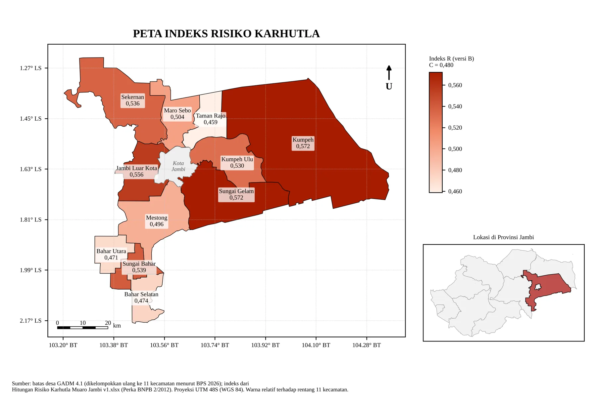
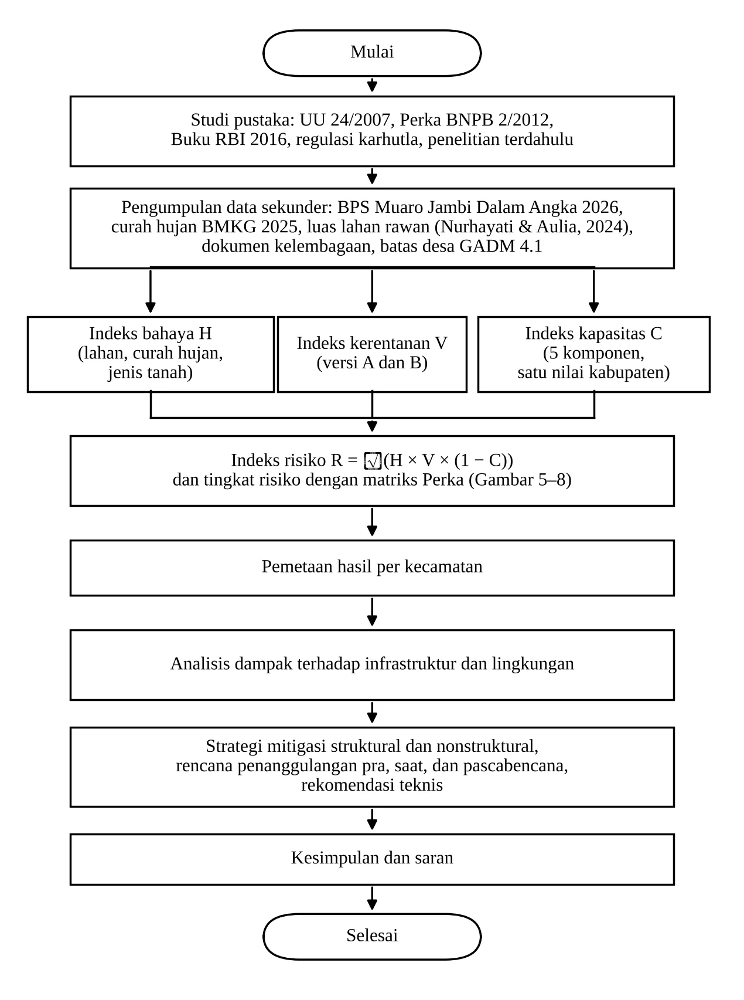

Kajian risiko kebakaran hutan dan lahan di Kabupaten Muaro Jambi
Menghitung tingkat risiko kebakaran hutan dan lahan di 11 kecamatan Kabupaten Muaro Jambi dengan metode Perka BNPB Nomor 2 Tahun 2012, lalu menyusun strategi mitigasi dan rekomendasi teknis.
- Acara atau tempat
- Tugas besar mata kuliah Manajemen Bencana, Universitas Jambi
- Tahun
- 2026
- Peran saya
- Penulis laporan tugas besar.
- Hasil
- 4 dari 11 kecamatan berisiko tinggi
- Perangkat lunak
- Microsoft Excel
- Jenis
- Kajian dan tugas kuliah, Perhitungan
Masalah
Kebakaran hutan dan lahan di Muaro Jambi berulang dan berpusat di lahan gambut bagian timur: luas terbakar 45.037 ha pada 2015 dan 20.891 ha pada 2019, dan kejadian 2026 kembali meningkat.
Indeks risiko per kecamatan
Indeks risiko R dihitung dari indeks bahaya H, kerentanan V, dan kapasitas C per kecamatan (Perka BNPB Nomor 2 Tahun 2012), lalu tingkat risikonya dibaca dari matriks bahaya–kerentanan–kapasitas. Semua hitungan ada di buku kerja Excel tujuh lembar: data, parameter, bahaya, kerentanan, kapasitas, risiko, dan rekap.
Batang tebal = tingkat risiko tinggi menurut matriks Perka.
Lihat data
| R | |
|---|---|
| Kumpeh | 0,57 |
| Sungai Gelam | 0,57 |
| Jambi Luar Kota | 0,56 |
| Sungai Bahar | 0,54 |
| Sekernan | 0,54 |
| Kumpeh Ulu | 0,53 |
| Maro Sebo | 0,50 |
| Mestong | 0,50 |
| Bahar Selatan | 0,47 |
| Bahar Utara | 0,47 |
| Taman Rajo | 0,46 |
| Kecamatan | H | V (B) | C | R (B) | Tingkat risiko |
|---|---|---|---|---|---|
| Kumpeh | 0,539 | 0,668 | 0,480 | 0,572 | Tinggi |
| Sungai Gelam | 0,557 | 0,646 | 0,480 | 0,572 | Tinggi |
| Jambi Luar Kota | 0,525 | 0,631 | 0,480 | 0,556 | Tinggi |
| Sungai Bahar | 0,566 | 0,533 | 0,480 | 0,539 | Tinggi |
| Sekernan | 0,533 | 0,555 | 0,480 | 0,536 | Sedang |
| Kumpeh Ulu | 0,522 | 0,550 | 0,480 | 0,530 | Sedang |
| Maro Sebo | 0,548 | 0,450 | 0,480 | 0,504 | Sedang |
| Mestong | 0,480 | 0,488 | 0,480 | 0,496 | Sedang |
| Bahar Selatan | 0,502 | 0,409 | 0,480 | 0,474 | Sedang |
| Bahar Utara | 0,493 | 0,408 | 0,480 | 0,471 | Sedang |
| Taman Rajo | 0,483 | 0,384 | 0,480 | 0,459 | Sedang |
Yang dikerjakan
- Indeks bahaya dari lahan, curah hujan, dan jenis tanah; indeks kerentanan (dua versi) dan indeks kapasitas kabupaten.
- Indeks risiko per kecamatan dan tingkat risiko dari matriks Perka BNPB, lalu dipetakan.
- Analisis dampak terhadap infrastruktur dan lingkungan.
- Mitigasi struktural (sekat kanal, sumur bor, embung, alat ukur muka air tanah, sekat bakar) dan nonstruktural, serta rencana penanggulangan pra, saat, dan pascabencana.
Hasil
| Indeks bahaya 11 kecamatan | 0,480–0,566 (sedang) |
|---|---|
| Indeks risiko (versi B) | 0,459–0,572 |
| Kecamatan berisiko tinggi | 4 dari 11 |
Gambar dan video





Seluruh data adalah data sekunder (BPS, BMKG, publikasi); keterbatasannya dijelaskan di laporan. Batas wilayah dari GADM 4.1.